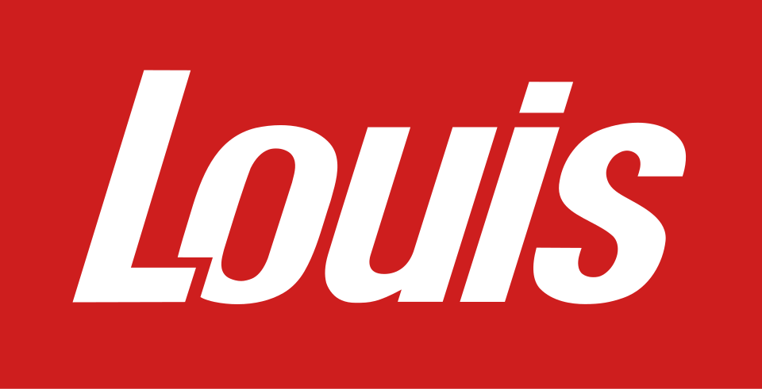

홈 > 브랜드 매거진 > Louis Motorcycle
Louis Motorcycle
루이스(Louis)는 1938년 독일 함부르크에서 설립된, 버크셔 해서웨이 소유의 유럽 최대 오토바이 용품·의류 소매업체이다.
산업 분야 모빌리티 · 공개 등급 자료 기반 · 브랜드 평가 4.1 ★

한눈에 보는 브랜드
루이스(Louis, Detlev Louis Motorrad-Vertriebsgesellschaft)는 독일 함부르크에 본사를 둔 유럽 최대 규모의 오토바이 의류·헬멧·부품·액세서리 소매 체인이다. 1938년 함부르크에서 발터 로만의 작은 정비점으로 출발해 전후 데틀레프 루이스가 1946년 단독 소유주가 되며 오늘의 사업 골격을 세웠다.
두 차례 결정적 전환점은 1964년 첫 우편 통신판매 카탈로그 발행과 1969년 가와사키 독점 수입권 획득이었다. 현재 독일·오스트리아·스위스·네덜란드에 약 90개 직영 매장과 다수의 온라인 숍을 운영하며 약 5만5천 종 이상의 상품과 다수 브랜드를 취급한다.
브랜드 관점
루이스의 본질은 제조사가 아니라 '크로스채널 리테일러'라는 점에 있다. 카탈로그 통신판매 시대에 일찍 자리 잡아 매장 네트워크와 온라인 숍을 결합한 옴니채널 구조를 완성했고, 바누치·프로바이커·로테발트 같은 자체(프라이빗) 브랜드 다수를 직접 기획해 500여 외부 브랜드와 함께 가격대를 촘촘히 메우는 전략을 쓴다.
이 자체 브랜드 비중이 마진과 차별성의 핵심이다. 2015년 워런 버핏의 버크셔 해서웨이가 약 4억 유로(약 5천억원 안팎)에 인수해 독립 자회사로 둔 사례는, 안정적 현금흐름을 가진 유럽 오프라인+카탈로그 소매업의 가치를 보여 준 상징적 거래로 평가된다.
한국 독자에게는 라이딩 기어를 단품이 아닌 '체계화된 카테고리 큐레이션'으로 파는 모델이라는 점이 시사적이다. 국내 라이더가 직구·병행수입으로 접하는 유럽 기어 상당수가 이 유통망을 거치며, 폴로 모토라트 등과 함께 유럽 애프터마켓 가격·트렌드의 기준점 역할을 한다.
시작과 성장
전간기 독일은 자동차가 사치재이던 시기로, 오토바이가 서민의 실용 이동수단이자 모터스포츠 열기의 중심이었다. 1938년 함부르크에서 발터 로만이 오토바이 상점을 열었고, 500cc BMW R51을 몰던 18세의 데틀레프 루이스가 첫 경주에서 로만과 인연을 맺었다.
전후 두 사람은 함부르크 로젠가에서 'Lohmann & Louis'로 사업을 재개했고, 1946년 데틀레프 루이스가 단독 소유주가 되며 회사 정체성이 그의 이름으로 굳어졌다. 첫 번째 전환점은 1964년 첫 통신판매 카탈로그 발행으로, 매장 반경을 넘어 우편으로 전국 라이더에게 부품·용품을 공급하는 원거리 소매 모델을 확립했다.
두 번째 전환점은 1969년 가와사키 독점 수입권 획득으로, 일본 대형 모터사이클의 독일 보급과 함께 회사 위상이 도약했다. 1981년 이후 지점망을 지속적으로 확장해 독일어권을 넘어 네덜란드 등으로 매장을 넓혔고, 작은 정비 공방에서 유럽 최대 오토바이 용품 소매 기업으로 성장했다.
2012년 창업주 데틀레프 루이스가 별세했다.
브랜드 아이덴티티
루이스의 가치는 '라이더를 위한 모든 것을 한곳에서'라는 풀라인 큐레이션과 신뢰성에 있다. 비주얼 아이덴티티는 강렬한 적색 계열과 굵은 워드마크, 오토바이를 뜻하는 픽토그램을 결합해 매장·카탈로그·온라인에서 즉각 식별되도록 통일돼 있으며, 카탈로그 시대부터 이어진 정보 밀도 높은 제품 안내가 브랜드 톤을 규정한다.
타깃은 입문자부터 투어링·스포츠·오프로드·클래식 라이더까지 폭넓으며, 자체 브랜드를 통해 가성비 입문층과 고급 라이더를 동시에 포괄한다. 브랜드 보이스는 과장 없이 기능·안전·실용을 앞세우는 전문점 어조로, 패션보다 장비로서의 신뢰를 강조한다.
제품과 서비스
취급 카테고리는 모터사이클 의류(재킷·팬츠·부츠·글러브), 헬멧, 정비·교체 부품, 공구, 전장·액세서리, 아웃도어·캠핑·레저 용품까지 폭넓다. 자체 브랜드(바누치·프로바이커·로테발트 등)와 500여 외부 브랜드를 함께 운영하며, 채널은 독일·오스트리아·스위스·네덜란드의 직영 매장과 다국어 온라인 숍, 카탈로그를 결합한 크로스채널 구조다.
현재 상태
본사는 독일 함부르크에 있으며, 정식 상호는 Detlev Louis Motorrad-Vertriebsgesellschaft mbH다. 2015년 미국 버크셔 해서웨이에 인수되어 현재까지 독립 자회사로 운영되는 것으로 알려져 있다.
독일·오스트리아·스위스·네덜란드를 중심으로 약 90개 직영 매장과 다수 온라인 숍을 통해 영업을 이어가고 있으며, 유럽 오토바이 용품 소매 부문 선두 지위를 유지하고 있다. 최신 매출·임직원 수의 정확한 수치는 출처별 편차가 커 미공개.
타임라인
정리된 연도형 이벤트가 없습니다.
BI/CI 변천사
함께 읽을 브랜드
BMW는 이동수단을 만드는 회사를 넘어, 주행 감각과 조형 언어를 함께 설계하는 디자인 브랜드다. BMW의 강점은 성능 수치만으로 설명되지 않는다. 운전자가 차를 보...
 모빌리티 · 자료 기반Repco
모빌리티 · 자료 기반Repco렙코(Repco)는 1922년 호주 멜버른에서 시작한 자동차 부품·애프터마켓 소매 체인이다. 호주·뉴질랜드에 다수 매장을 둔 대표적 자동차 부품 소매업체다.
 모빌리티 · 매거진 완성할리데이비슨
모빌리티 · 매거진 완성할리데이비슨할리데이비슨은 모터사이클보다 자유와 소속감의 의식을 더 강하게 판매한다. 제품은 이동수단이지만 브랜드의 핵심은 엔진음, 라이딩 문화, 커뮤니티, 반항적 이미지가 결합...
 모빌리티 · 편집 검수AGIP
모빌리티 · 편집 검수AGIPAGIP는 1971년에 기록된 Energy 계열의 브랜드 아이덴티티 사례입니다. Bob Noorda, Unimark International가 아이덴티티 작업의 디자...
 모빌리티 · 편집 검수Elf
모빌리티 · 편집 검수ElfElf는 1966년에 기록된 Energy 계열의 브랜드 아이덴티티 사례입니다. Jean-Roger Rioux, Signe & Fonction가 아이덴티티 작업의 디자...
 모빌리티 · 편집 검수Mobil
모빌리티 · 편집 검수MobilMobil는 1966년에 기록된 Energy 계열의 브랜드 아이덴티티 사례입니다. Chermayeff & Geismar가 아이덴티티 작업의 디자이너로 기록되어 있습니...
PA
PAM
모빌리티 · 편집 검수PAMPAM는 1965년에 기록된 Energy 계열의 브랜드 아이덴티티 사례입니다. Total Design, Benno Wissing, George Koizumi, Pie...
 모빌리티 · 편집 검수Repsol
모빌리티 · 편집 검수RepsolRepsol는 2025년에 기록된 Energy 계열의 브랜드 아이덴티티 사례입니다. Saffron가 아이덴티티 작업의 디자이너로 기록되어 있습니다. 로고, 타입, 컬...